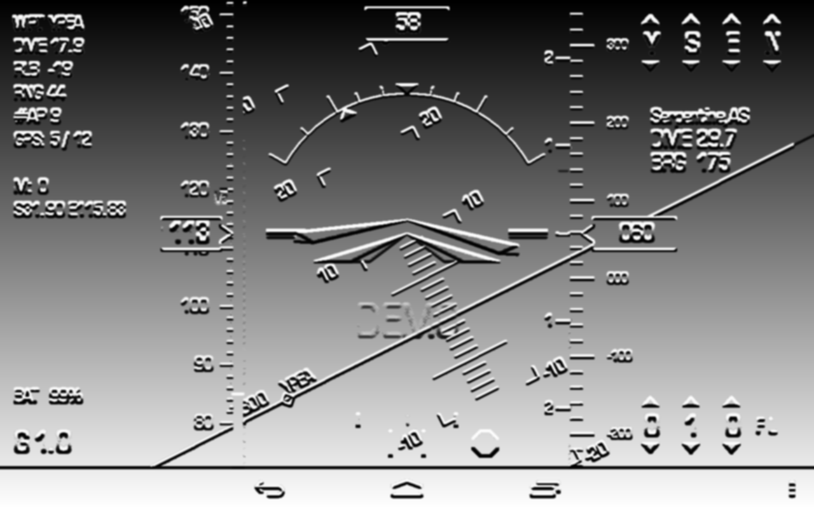

General
Kwik EFIS is a suite of applications which implement a Glass Cockpit solution
designed to function on most Android devices equipped with a GPS,
gyroscope, accelerometer and a CPU with reasonable performance.
The suite currently consist of two applications:
Primary Flight Display (PFD), Kwik EFIS and;
Multi Function Display (MFD) digital moving map, Kwik DMAP

Initial test flights with Kwik EFIS has been encouraging.
Results are better on the Nexus 7 tablet then the Galaxy S2 phone but
that is to be expected since the sensors on the various Android devices vary greatly
in quality and performance.
The slip/roll coupling uses a low pass filter on all the sensors.
This helps with some of the inferior gyroscrope and accelerometer sensors on some of the
cheaper Android
devices.
Flight Director
Kwik EFIS has a fully functional flight director built in. It uses the standard V-Bar
symbology common to modern flight directors. The target waypoint and altitude is set
on-screen
by means of the spinner controls on the right top and bottom of the screen.
Demo Mode
There is also a "Demo Mode" available in the application. It is fairly rudimentary and
basically works like a crude flight simulator.
The heading and altitude can be changed by pitching and banking the device. The speed
runs up and down automatically based on the pitch.
|